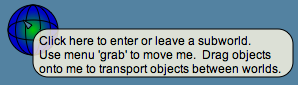
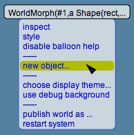

Lively Kernel Tutorial: (11) Worlds and Subworlds
Back to Introduction
PREVIOUS
Source code of this demo
NEXT
Lively Kernel applications and widgets usually live in an environment known
as the world. A world is a visual container that can contain
various types of objects and applications simultaneously.
Each world can contain any number of subworlds, identified by
spiderweb-like LinkMorph icons.
You can create new subworlds by choosing the "new object..."
operation from the popup menu of the world (i.e., popup menu of
the background of the display).
You can transport objects from one world to another using the "wormhole"
feature: When you drag objects onto a LinkMorph, the objects are
immediately transported to the other world.


Try it yourself! Try clicking the subworld icon (LinkMorph) below.
Come back from the subworld by clicking the corresponding LinkMorph in the subworld.
Try creating new subworlds yourself using the "new object..."
operation available in the popup menu of the world.
Furthermore, try transporting objects across worlds using the wormhole feature.